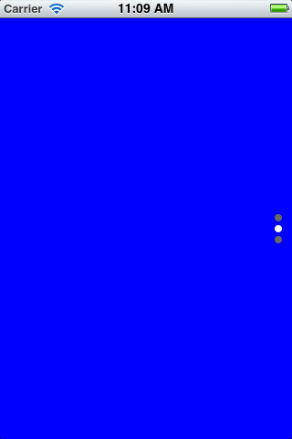
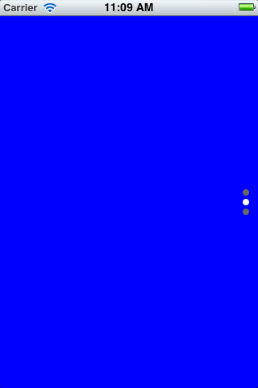

Carousel 이란?
탭바를 탭해서 해당 Scene(화면)으로 이동하는 것과 비숫하게 Carousel에서는 여러 Panel을 Swipe(옆으로 스크롤)해서 해당 패널을 볼 수 있도록 제공하고 있습니다.
Mobello에서 제공하는 Carousel는 수평방향, 수직방향 Carousel을 제공하고 있습니다.
 

var vCarousel = new tau.ui.Carousel({
vertical: true
});
|
var hCarosel = new tau.ui.Carousel({
vertical: false // 설정하지 않아도 기본값은 수평방향임.
});
|
하위 Panel 추가하기
Carousel 컴포넌트는 하위로 Panel컴포넌트를 가질 수 있습니다. 하위에 Panel 컴포넌트는 Carousel 컴포넌트 크기로 고정됩니다.
|
var carousel = new tau.ui.Carousel({vertical: true}),
var panel1 = new tau.ui.Panel({styles: {backgroundColor: 'red'}});
var panel2 = new tau.ui.Panel({styles: {backgroundColor: 'blue'}});
...
carousel.setComponents([panel1, panel2, panel3]);
다른 컴포넌트를 배치하고자 한다면 Panel 컴포넌트 하위에 추가하면 됩니다.
var panel3 = new tau.ui.Panel({
styles: {backgroundColor: 'yellow'},
components: [
new tau.ui.Button({label: 'button1'})
]
});
...
되도록이면 Panel 컴포넌트에 스크롤 기능이 있는 컴포넌트 배치는 지양해야 합니다. 이중 스크롤이 생기게 되면 의도하지 않게 오동작할 수 있습니다. |